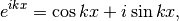

Differentiation
Taylor expansion
We start from Taylor’s theorem. Assume a function  is
differentiable. Fundamental theorem of calculus and integration by parts
lead
is
differentiable. Fundamental theorem of calculus and integration by parts
lead
![f(x) - f(x_0)
&=
\int_{x_0}^{x} f'(y) dy
=
\int_{x_0}^x (x - y)^{0} f'(y) dy \\
&=
\left[- \left (x - y\right) f'(y)\right]_{x_0}^x + \int_{x_0}^x \left (x - y\right) f^{(2)} (y) dy \\
&=
(x - x_0) f'(x_0) + \left[- \frac{(x-y)^2}{2} f^{(2)}(y)\right]_{x_0}^x + \int_{x_0}^x \frac{(x - y)^2}{2} f^{(3)} (y)dy. \\
&=
(x - x_0) f'(x_0) + \frac{(x-x_0)^2}{2} f^{(2)}(x_0) + \int_{x_0}^x \frac{(x - y)^2}{2} f^{(3)} (y)dy.](_images/math/007da8e2ca181ec01225c61cddc61581400e573f.png)
Further iteration leads the following Taylor’s theorem.
where is a shorthand notation for , the last term of the RHS is called the remainder term and denoted by .
Now assume the remainder term converges to 0 as and the above series also converges in some suitable sense. Let . Then we get
This series is called a Taylor series around 0 and this power series expansion is called a Taylor expansion around 0.
A Taylor expansion of an exponential function around is as follows.

We compare the above two expressions and set  to in
the expansion of . Then we have the following clear
expression.
to in
the expansion of . Then we have the following clear
expression.
If we use quantum mechanical notation, , the above expression becomes
Unitary representation of a group
The above story closely related to a unitary representation theory of a
group. Simply speaking a underlying space  itself is a
group and it acts on itself. This action lifts up to a function space
living on a underlying space. See for details.
itself is a
group and it acts on itself. This action lifts up to a function space
living on a underlying space. See for details.
One point. Physicists often define functions of operators by Taylor expansion. However it is not good and insufficient in view of mathematics. We can see it when we consider the action of .
The operator  shifts an argument of a function
, and this shift is defined without differentiability of
functions, i.e., we can define an action of for more
general functions. However if we define it by a Taylor expansion, the
operator is defined for only analytic functions.
shifts an argument of a function
, and this shift is defined without differentiability of
functions, i.e., we can define an action of for more
general functions. However if we define it by a Taylor expansion, the
operator is defined for only analytic functions.
Fourier expansion
A simple argument can deduce a Fourier expansion. We can formally
consider for , but this is a little bit mathematically
problematic. Instead we consider on an interval ![[ - \pi, \pi]](_images/math/3c8e867bc0fb892d3179b3293113d3e323cfc4b5.png) .
.
Consider a linear differential equation (eigenequation for self-adjoint
operator  )
)
Then the above solutions are

for each  .
Note that computation shows the set of
eigenvalues
.
Note that computation shows the set of
eigenvalues  is, in fact,
is, in fact,  and that
the above solutions
and that
the above solutions  are the eigenfunctions of each eigenequation
are the eigenfunctions of each eigenequation  .
.
Euler’s formula says

and this leads a Fourier expansion.
Analitical mechanics and quantum mechanics
In quantum mechanics a momentum becomes a differential operator and denotes .
In analytical mechanics a momentum can be viewed as a generator of space shift. A differential operator is also a generator of space shift in view of representation theory. Hence these are common property, generator of space shift. This is an important formal connection to classical mechanics and quantum mechanics. This connection is also important in geometry.
Physics and representation theory
Representation theory is also important for theory of relativity and relativistic quantum field theory.
A variational problem is an infinite dimensional version of differential theory. This is important and interesting in both physics and mathematics.
It is a mathematically and physically famous problem that why soap bubble becomes round. This type of problems is called a geometric variational problem.